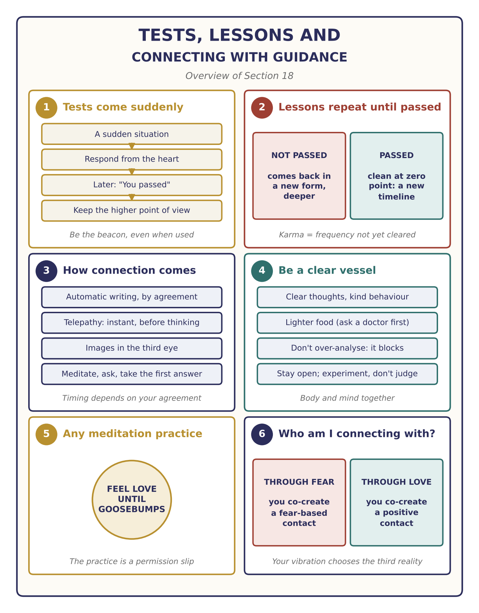
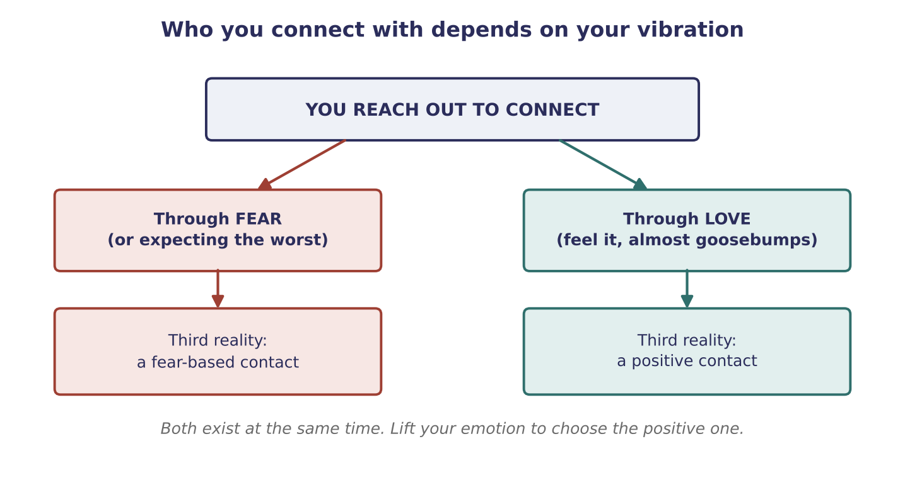

E.T Ascension thru Quantum Field – Part 2
How tests and lessons work, how connection with guidance comes, being a clear vessel, and how to know who you're connecting with (continuation of Section 17, with questions)

This recording continues the Section 17 talk. A short part between the two recordings is missing, so this section begins in the middle of a teaching about tests.
Key teachings
18.1Tests come suddenly
Once you start learning the structure, you will be tested, and the tests come so quickly and unexpectedly that you have to react on the spot. Only afterwards may you learn that it was a test, and whether you passed. A typical test: someone hurts you or uses you, for example by taking your knowledge or work. What will you do?
The answer is to be the beacon: hold the high frequency. It can genuinely hurt, but that hurt is also an illusion, because the other person is acting from their own level of understanding. Perhaps they needed to learn about greed; perhaps you were their teacher, and the question is whether they will change. There are many levels involved, so always look from the higher point of view (see 14.3).
18.2Lessons repeat until they are passed
Question: are these challenges still to come, or do the ones we've already been through count?
Each person creates their own hologram, and before coming here you agreed to certain lessons, written into your bylaws, almost like a script (see 10.5). If you didn't do a lesson well and didn't clear its structure, it comes back, because that unfinished frequency doesn't resonate with the higher structures of ascension. It may not come the same way, but in a different form, through a different person, to see what you do this time. If, for example, the lesson is about greed or taking what isn't yours, you will meet a similar situation again.
If you don't change, it keeps coming, more and more, because you are accumulating more of the same, and it gets deeper and harder to get out of. You may even go through a whole lifetime of that lesson and have to repeat it. That is karma: accumulated frequency you didn't clear (see 14.2). Some people need "one smack in the face" to understand; others need "a complete boxing match." Everyone's lessons are different.
To move into something new, you have to clean everything out completely: zero point, where everything is clean. Then the new structure comes in, and you start a new timeline (see 2.1).
18.3How the connection comes
Question: how will the connection with our guidance or galactic family be transmitted? Telepathically?
In different ways, depending on your agreement. For the teacher it began with automatic writing, letting the hand move freely, which later turned out to be preparation for writing down very complex geometric patterns for technical material. It took many years before telepathic talk began, but that doesn't mean it will take you as long: depending on your agreement, a connection could begin within weeks, or tomorrow.
Telepathic information is instantaneous. It arrives before you start thinking about it, before your learned, three-dimensional mind begins analysing. It may be words, a whole answer at once, an image in your third eye, or a hologram. The line is very thin, so learn to notice it: calm yourself, meditate (at night, or whenever suits you), ask a question, and take the answer that comes simultaneously. When you start analysing and adding your own material, you put a blocking layer on it; much of what we were taught has to be erased to make room for the new.
Trust builds through confirmation. Guidance may tell you something that sounds impossible, and then, through synchronicity, someone else independently says the same thing. That is how you learn to trust it. Look at things as energy and structure, not only as matter: for example, there is a portal at the centre of the Earth because every planet is like a nanoparticle, and any calculation done only through matter, not through the structure of light, will go wrong (see 1.1).
18.4Be a clear vessel
For telepathic connection you need to be a clear vessel resonating at a higher frequency. That combines everything: your thoughts, your consciousness, the way you behave towards people from the heart, and your body, because the body is the vessel the frequency comes into. The talk recommends lighter food, such as fresh juices and raw food, as part of this (see 9.7, 15.4). As always, check with a doctor before any detox or big change of diet.
18.5Always connected: stay open and experiment
Question: are we known as individuals and guided towards our purpose, or connected only in a general "all is one" sense?
You are always connected. What blocks it is belief: the moment you hold the belief "this isn't possible," you project yourself into a reality where it isn't. So stay open-minded, think outside the box, and let the new teachings in, however strange they sound. Living only inside a narrow three-dimensional view blocks the whole structure.
When something is new, such as the claim that DNA can be changed through frequency, try it and research it rather than judging where it came from. The guidance deliberately chose someone outside the mainstream, who would let it be and then research it; through synchronicity, scientists who each had a piece of the puzzle confirmed parts of it. So scientists need to collaborate, not compete: new technology will be given on top of what exists, to people who resonate with the structure and aren't driven by greed. And technology must not be withheld; it belongs to humanity. Everything is seen, and ascension cannot be stopped.
18.6Meditation practices are permission slips
Question: are practices like Qigong and Vipassana helpful for staying strong and neutral, and for connecting with galactic families?
Yes, as a permission slip: if a practice makes you comfortable, use it to reach that level (see 1.8 and Section 1's questions). But always do it from the heart. When you meditate to connect, bring in the feeling of love, as if on cue, until you almost get goosebumps. That is the vibration the higher-dimensional and positive beings tune into, so you are recognised and make the right connections.
18.7Who am I connecting with? Your vibration decides
Question: I've realised there has been a connection all along. How do I tell who's who: Pleiadian, Arcturian, angelic?
The answer, given as from the 11-dimensional beings, turns the question around. Consciousness is in constant movement, and the emotional sequence you are vibrating in the present moment decides which location in which timeline you connect with. The connection is a third reality you co-create (1 + 1 = 3; see 2.2, 17.5).
So if you come to a connection through fear, you co-create a fear-based contact; if you assume the being is negative, you may connect with a negative sequence, because you put that frequency in first. Both the positive and the negative exist at the same time; which one you perceive depends on your emotion and belief in that moment. Asked which one to choose, the answer was "the positive", and the instruction was to lift up and feel the positive emotion, so that you perceive a positive sequence. Rather than trying to label sources, check your own vibration and keep it loving.
The recording ends as the next question begins.

The method — Connect as a Clear Vessel
For meditation, prayer or any time you want to receive guidance:
- Clear the vessel. Kind behaviour today, a calm mind, and care for your body.
- Calm down and meditate in whatever way is your permission slip.
- Bring in love. Feel it, as if on cue, until you almost get goosebumps. No fear.
- Ask your question.
- Take the first answer, the word, image or knowing that comes before you start thinking.
- Don't analyse it to death. Note it, and watch for confirmation through synchronicity.
- When a test comes, hold the higher point of view and respond from the heart.